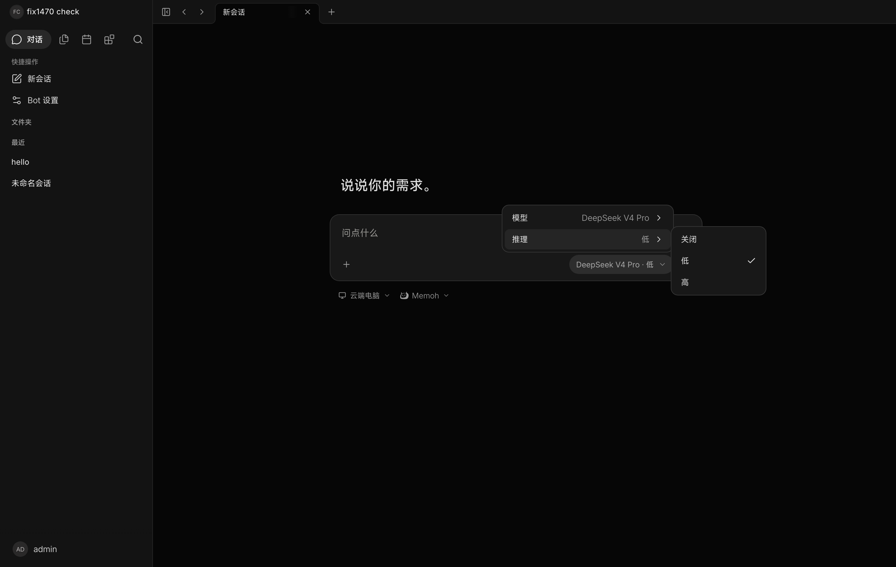
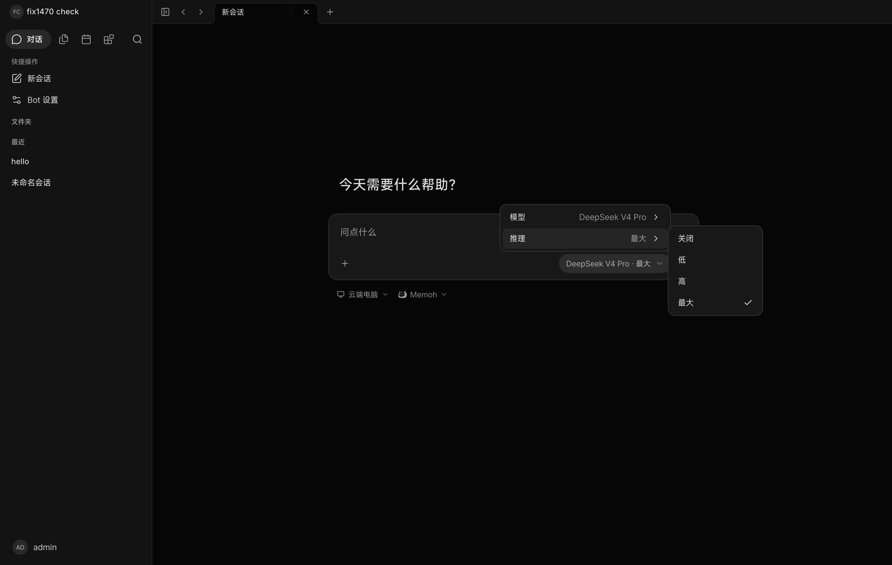
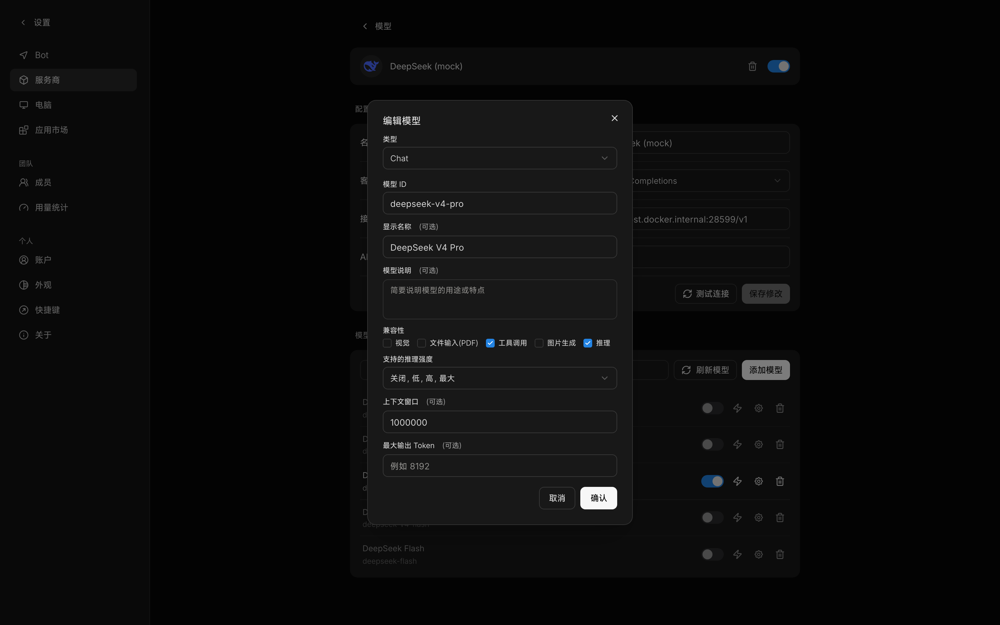

#1470 修的是推理档位的取值来源；最大输出 Token 补上用户此前无法设置的输出上限。两项合成一条线性栈，已推远程。
| 问题 | 原因 |
|---|---|
DeepSeek 等模型在 OpenAI 形状的 client 上选不到 max | 档位要与一条按 client_type 写的规则取交集，openai-completions / openai-responses 上去掉 max，发请求时再改写成 xhigh |
| 输出上限用户无法设置 | 请求侧只用 generation_limits.go 的常量（预留 8192，思考时 32000）；回复被截断时按正常完成处理 |
openai-completions 上档位去掉 maxmax → xhigh 改写budget_tokens；Opus 4.6 有 max 没有 xhigh，却是 adaptive。因此机制只读模型声明，未声明的 Claude 模型仍按 Anthropic 文档的代际规则判定。下面是同一个 bot、同一个模型、同一份存档配置，分别在 origin/main 与本分支上的实际界面。存档里 reasoning_efforts 一直是 [disable, low, high, max]，两边都没改过。

max 不可选
同一时刻服务端 GET /providers/:id/models 返回的解析结果：
| 分支 | 存档档位 | 解析后的 efforts |
|---|---|---|
origin/main | [disable, low, high, max] | [low, high]，max 被去掉 |
| 本分支 | [disable, low, high, max] | [low, high, max] |
模型编辑对话框新增「最大输出 Token」，与「上下文窗口」并列，均为可选。截断发生时，回复里带出提示而不是当作正常完成。

| 字段 | 出现条件 |
|---|---|
| 向量维度 | 类型为 Embedding |
| 兼容性 | 类型为 Chat |
| 支持的推理强度 | Chat、勾选「推理」，且模型不是 always |
| 上下文窗口 / 最大输出 Token | 类型为 Chat，均可选、须大于 0 |
| 显示名称 / 模型说明 | 始终显示，标「（可选）」 |
档位列表与「哪条线路承载思考控制」是两个独立事实。同一个列表可以对应不同的线路，同一代际的模型也可以有不同的档位。
| 模型 | 声明的档位 | 实际线路 |
|---|---|---|
claude-opus-4-5 | [low, medium, high] | budget_tokens（不接受 effort 字段） |
claude-opus-4-6 | [low, medium, high, max] | adaptive + effort |
gemini-2.5-pro | [low, medium, high] | thinkingBudget（token 数） |
gemini-3.1-pro | [low, medium, high] | thinkingLevel（具名档位） |
旧数据里存在两种已废弃的档位拼写，本迁移把它们归一：none → disable；adaptive 在「无法关闭」的模型上 → disable，其余 → medium。
迁移连接不设 memoh.team_id，而 bots、bot_sessions、schedule、models 都在 FORCE RLS 下；不抬起策略就报错中止。四张表都要抬起并在末尾按相反顺序复位。
栈内有 10 个文件被两个提交改过。按返工判据（后一提交是否删掉前一提交刚加的行）逐行核对，返工处为 0：重叠的都是「先加字段、后被消费」的正常分层。
| 缺陷 | 后果（若不修） | 抓它的东西 |
|---|---|---|
迁移 0166 起初只在 bots 上解除 RLS；bot_sessions、schedule、models 同样处于 FORCE RLS | 受限角色下报 memoh.team_id is not set，整段迁移中止 | TestMigrationsDoNotRequireClusterRolePrivileges（受限角色跑全部迁移）；TestReasoningEffortNormalizationMigration 校验四张表迁移后仍为 FORCE RLS |
重编号时 0165 → 0166 后，本机 dev 库仍停在 165 | golang-migrate 找不到 165 而中止，migrate up 失败。 | 在 dev 库上实跑 migrate up |
service_test.go 解冲突时丢了闭合括号 | 测试包编译失败，go build 不编译测试文件，到 go test 才暴露 | go test |
全部在最终分支（integ/1470-fixes，栈底 origin/main）上实跑。
| 检查 | 结果 |
|---|---|
go build ./... / go vet ./... | 通过 |
go test ./... | 0 个失败包 |
DB integration（-tags=integration ./internal/db/，含 0166） | 通过 |
golangci-lint run --new-from-rev=origin/main ./... | 本栈 0 项 |
UI contract guard（scripts/check-ui-contract.mjs） | 通过 |
| dev 栈实跑：迁移从 164 应用到 0166，服务健康 | 通过 |
| dev 栈实跑：同一存档配置下对照 main 与本分支的选择器 | 见第 2 节 |
| 项 | 说明 |
|---|---|
| 人工 QA | 未做，界面未经人工走查 |
| Anthropic 路径 | 仅单元测试覆盖，dev 栈未验证 |
| #1524 的 base | #1524 的 base 为 086c3a710，本栈底更新。其提交已在本栈顶端重放，主线若走本栈，该 PR 可关闭 |
| UI 缺口 | reasoning_dialect / reasoning_off_support / thinking_budget_* 在界面上仍不可见、不可改，只存在于模板与数据层 |
定案与证据：docs/research/RN-2026-10-10-model-catalog-models-dev.md（主仓）。
下面三项与模型能力目录（models.dev）有关，属于另一条工作线，本 PR 不含。
| 项 | 说明 |
|---|---|
| 空档位列表仍被兜底 | 目录说「只有开关、没有档位」（options: [{"type":"toggle"}]）时，effectiveEfforts 把空列表兜成 [low, medium, high]，界面显示端点并不存在的三个档位 |
| 模板覆盖目录 | 模型在模板里与不在模板里走两条路：在模板里以模板为准，不在模板里才读目录。目录里 9 个 Xiaomi 模型，我们一个模板都没有，用户导入时全部落到兜底 |
| provider 与 model 同文件 | conf/providers/*.yaml 里 provider 定义与它的模型列表写在同一文件；模型只能手写进模板才会被同步到，目录里新增的模型不会自动出现 |
本报告第 2、3 节的界面为 dev 栈实际截图；其余图示为按真实字段与文案绘制的示意。